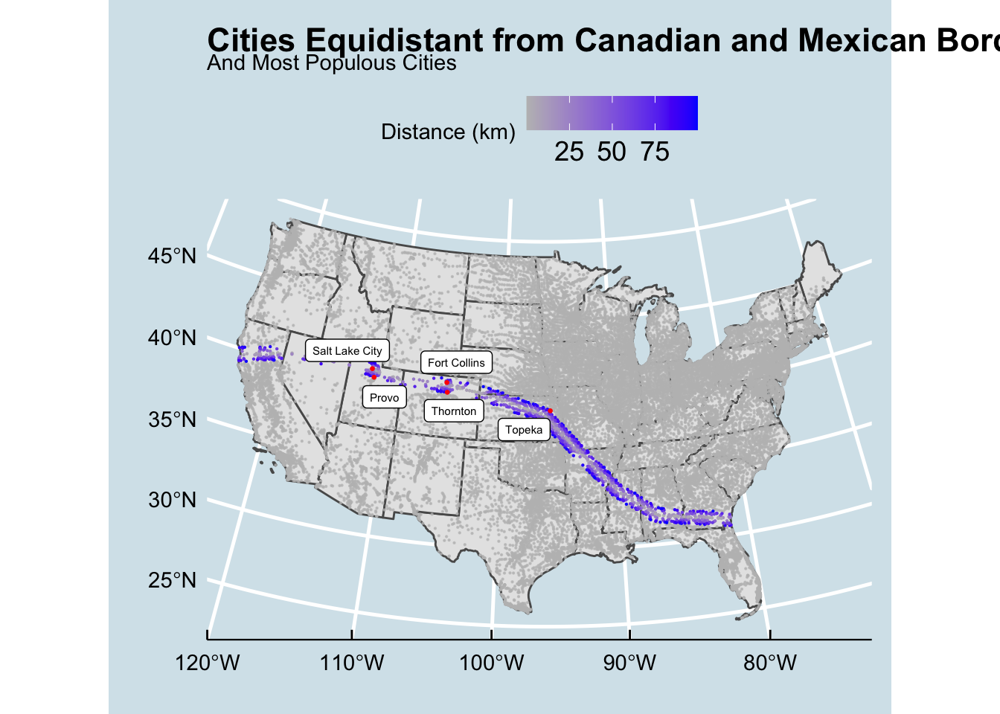
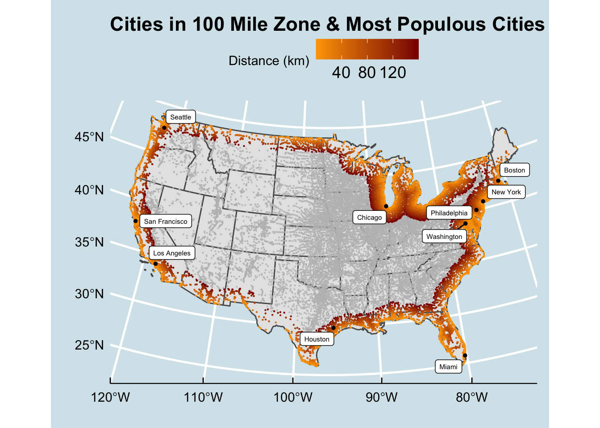
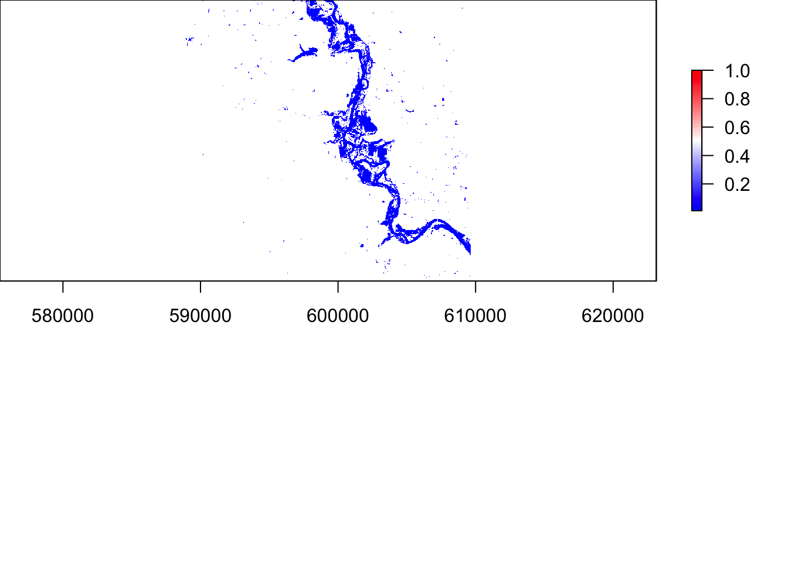

Covid Cases
# Lab 2 Data
library(tidyverse)
library(knitr)
library(readxl)
library(zoo)
library(dplyr)
url = 'https://raw.githubusercontent.com/nytimes/covid-19-data/master/us-counties.csv'
covid = read_csv(url)
pop = PopulationEstimates <- read_excel("~/Downloads/PopulationEstimates.xls",
skip = 2)
#Set up data by county/create a New Cases column
data = covid %>%
filter(state == "California") %>%
group_by(county) %>%
mutate(newCases = cases - lag(cases)) %>%
ungroup()
today = data %>% filter(date == max(date))
# Calculate total California Cases for end analysis
sum(today$cases)
## [1] 3607544
sum(today$newCases)
## [1] 4131
# Make Tables - Cumulative/New Cases
most_new_cases = today %>%
slice_max(newCases, n = 5) %>%
select(county, newCases)
most_cumulative_cases = data %>%
filter(date == max(date)) %>%
slice_max(cases, n = 5) %>%
select(county, cases)
# Refine Tables - cumulative/new cases
library(kableExtra)
knitr::kable(most_new_cases,
caption = "California Counties: Most New Cases",
col.names = c("County", "New Cases"),
format.args = list(big.mark = ",")) %>%
kableExtra::kable_styling("striped", full_width = TRUE, font_size = 14)
California Counties: Most New Cases
|
County
|
New Cases
|
|
Los Angeles
|
1,259
|
|
San Diego
|
473
|
|
Riverside
|
452
|
|
San Joaquin
|
262
|
|
Orange
|
146
|
knitr::kable(most_cumulative_cases,
caption = "California Counties: Most Cumulative Cases",
col.names = c("County", "Cumulative Cases"),
format.args = list(big.mark = ",")) %>%
kableExtra::kable_styling("striped", full_width = TRUE, font_size = 14)
California Counties: Most Cumulative Cases
|
County
|
Cumulative Cases
|
|
Los Angeles
|
1,205,924
|
|
Riverside
|
291,492
|
|
San Bernardino
|
288,045
|
|
San Diego
|
263,811
|
|
Orange
|
262,995
|
# Join population to covid data/filter to include only last 14 days
perCap = pop %>%
select(fips = "FIPStxt", state = "State", pop2019 = "POP_ESTIMATE_2019") %>%
right_join(data, by = "fips") %>%
mutate(cumulative_cases_percapita = (cases/pop2019), new_cases_percapita = (newCases/pop2019)) %>%
filter(date >= max(date) - 13)
# Make Percapita Tables
cum_per_cap = perCap %>%
filter(date == max(date)) %>%
slice_max(cases, n = 5) %>%
select(county, cumulative_cases_percapita)
new_per_cap = perCap %>%
filter(date == max(date)) %>%
slice_max(cases, n = 5) %>%
select(county, new_cases_percapita)
# Refine Tables - Per Capita
knitr::kable(cum_per_cap,
caption = "California Counties: Most Cumulative Cases Per Capita",
col.names = c("County", "Cumulative Cases Per Capita"),
format.args = list(big.mark = ",")) %>%
kableExtra::kable_styling("striped", full_width = TRUE, font_size = 14)
California Counties: Most Cumulative Cases Per Capita
|
County
|
Cumulative Cases Per Capita
|
|
Los Angeles
|
0.1201226
|
|
Riverside
|
0.1179869
|
|
San Bernardino
|
0.1321256
|
|
San Diego
|
0.0790248
|
|
Orange
|
0.0828150
|
knitr::kable(new_per_cap,
caption = "California Counties: Most New Cases Per Capita",
col.names = c("County", "New Cases Per Capita"),
format.args = list(big.mark = ",")) %>%
kableExtra::kable_styling("striped", full_width = TRUE, font_size = 14)
California Counties: Most New Cases Per Capita
|
County
|
New Cases Per Capita
|
|
Los Angeles
|
0.0001254
|
|
Riverside
|
0.0001830
|
|
San Bernardino
|
0.0000005
|
|
San Diego
|
0.0001417
|
|
Orange
|
0.0000460
|
# Calculate number of new cases in last 14 days per 100000 people/number of safe counties
safe = perCap %>%
group_by(county, pop2019) %>%
summarise(total_newCases = sum(newCases, na.rm = TRUE)) %>%
mutate(total_safecounties = total_newCases/(pop2019/100000)) %>%
filter(total_safecounties < 100)
# Facet plot 1
data2 = covid %>%
filter(state %in% c("New York","California", "Louisiana", "Florida")) %>%
group_by(state, date) %>%
summarize(cases = sum(cases)) %>%
ungroup() %>%
group_by(state) %>%
mutate(newCases = cases - lag(cases),
roll7 = zoo::rollmean(newCases, 7, fill = NA, align = 'right')) %>%
ungroup() %>%
filter(newCases > 0)
ggplot(data = data2, aes(x = date)) +
geom_col(aes(y = newCases), col = NA, fill = "red") +
geom_line(aes(y = roll7), col = "darkred", size = 1) +
ggthemes::theme_wsj() +
labs(title = paste("New Cases")) +
theme(plot.background = element_rect(fill = "white"),
panel.background = element_rect(fill = "white"),
plot.title = element_text(size = 14, face = 'bold')) +
facet_grid(~state, scales = "free_y")
data3 = pop %>%
select(pop2019 = "POP_ESTIMATE_2019", areaname = "Area_Name") %>%
right_join(data2, by = c("areaname" = "state")) %>%
mutate(cases_per_capita = (newCases/pop2019), roll7 = zoo::rollmean(cases_per_capita, 7, fill = NA, align = 'right')) %>%
ungroup() %>%
filter(cases_per_capita > 0)
ggplot(data = data3, aes(x = date)) +
geom_col(aes(y = cases_per_capita), col = NA, fill = "lightblue") +
geom_line(aes(y = roll7), col = "blue", size = 1) +
ggthemes::theme_wsj() +
labs(title = paste("New Cases Per Capita")) +
theme(plot.background = element_rect(fill = "white"),
panel.background = element_rect(fill = "white"),
plot.title = element_text(size = 14, face = 'bold')) +
facet_grid(~areaname, scales = "free_y")
Problem 2
Put numbers into variables, do simple math on the variables
library(tidyverse)
library(sf)
library(units)
# Data
library(USAboundaries)
library(rnaturalearth)
# Visualization
library(gghighlight)
library(ggrepel)
library(knitr)
library(ggthemes)
# Question 1.1 -Define a Projection
eqdc = '+proj=eqdc +lat_0=40 +lon_0=-96 +lat_1=20 +lat_2=60 +x_0=0 +y_0=0 +datum=NAD83 +units=m +no_defs'
# Question 1.2 - Get USA state boundaries
data = USAboundaries::us_states(resolution = "low") %>%
filter(!state_name %in% c("Puerto Rico", "Alaska", "Hawaii")) %>%
st_transform(eqdc)
# Question 1.3
country = rnaturalearth::countries110
country_sf = st_as_sf(country) %>%
filter(admin %in% c("United States of America", "Mexico", "Canada")) %>%
st_transform(eqdc)
# Question 1.4- City locations
cities = readr::read_csv('~/Documents/github/exercise-04/data/uscities.csv')
cities_sf = data.frame(y = c(-121.7608, -119.7202), x = c(34.4285, 37.6861))
cities_sf = st_as_sf(cities, coords = c("lng", "lat"), crs = 4326) %>%
filter(!state_name %in% c("Puerto Rico", "Alaska", "Hawaii"))
cities_eqdc = st_transform(cities_sf, eqdc) %>%
select(city, state_name, population)
# Union and Combine States
usa_geom2 = data$geometry
ca_u_ml = st_union(usa_geom2) %>%
st_cast("MULTILINESTRING")
ca_c_ml = st_combine(usa_geom2) %>%
st_cast("MULTILINESTRING")
# Distance to US Border
cities_eqdc = cities_eqdc %>%
mutate(dist_border = st_distance(cities_eqdc, ca_u_ml)) %>%
mutate(dist_border = units::set_units(dist_border, "km"))
# Distance to state borders
cities_eqdc = cities_eqdc %>%
mutate(dist_state = st_distance(cities_eqdc, ca_c_ml)) %>%
mutate(dist_state = units::set_units(dist_state, "km"))
# Distance to Canada
cities_eqdc = cities_eqdc %>%
mutate(dist_Canada = st_distance(cities_eqdc, filter(country_sf, admin == "Canada"))) %>%
mutate(dist_Canada = units::set_units(dist_Canada, "km"))
# Distance to Mexico
cities_eqdc = cities_eqdc %>%
mutate(dist_Mexico = st_distance(cities_eqdc, filter(country_sf, admin == "Mexico"))) %>%
mutate(dist_Mexico = units::set_units(dist_Mexico, "km"))
# Distances:
# Cities to US Border
cities_eqdc %>% select(city,state_name, dist_border) %>% slice_max(dist_border, n = 5) %>%
st_drop_geometry() %>%
knitr::kable(caption = "Cities Farthest from US Border",
col.names = c("City", "State", "Distance to US Border"),
format.args = list(big.mark = ",")) %>%
kableExtra::kable_styling("striped", full_width = TRUE, font_size = 14)
Cities Farthest from US Border
|
City
|
State
|
Distance to US Border
|
|
Dresden
|
Kansas
|
1,012.317 [km]
|
|
Herndon
|
Kansas
|
1,007.750 [km]
|
|
Hill City
|
Kansas
|
1,005.147 [km]
|
|
Atwood
|
Kansas
|
1,004.734 [km]
|
|
Jennings
|
Kansas
|
1,003.646 [km]
|
# Cities to states
cities_eqdc %>% select(city,state_name, dist_state) %>% slice_max(dist_state, n = 5) %>%
st_drop_geometry() %>%
knitr::kable(caption = "Cities Farthest from State Boundaries",
col.names = c("City", "State", "Distance to State Boundary"),
format.args = list(big.mark = ",")) %>%
kableExtra::kable_styling("striped", full_width = TRUE, font_size = 14)
Cities Farthest from State Boundaries
|
City
|
State
|
Distance to State Boundary
|
|
Lampasas
|
Texas
|
308.9216 [km]
|
|
Bertram
|
Texas
|
302.8190 [km]
|
|
Kempner
|
Texas
|
302.5912 [km]
|
|
Harker Heights
|
Texas
|
298.8125 [km]
|
|
Florence
|
Texas
|
298.6804 [km]
|
# Distance to Mexico
cities_eqdc %>% select(city,state_name, dist_Mexico) %>% slice_max(dist_Mexico, n = 5) %>%
st_drop_geometry() %>%
knitr::kable(caption = "Cities Farthest from Mexican Border",
col.names = c("City", "State", "Distance to Mexican Border"),
format.args = list(big.mark = ",")) %>%
kableExtra::kable_styling("striped", full_width = TRUE, font_size = 14)
Cities Farthest from Mexican Border
|
City
|
State
|
Distance to Mexican Border
|
|
Caribou
|
Maine
|
3,250.334 [km]
|
|
Presque Isle
|
Maine
|
3,234.570 [km]
|
|
Calais
|
Maine
|
3,134.348 [km]
|
|
Eastport
|
Maine
|
3,125.624 [km]
|
|
Old Town
|
Maine
|
3,048.366 [km]
|
# Distance to Canada
cities_eqdc %>% select(city,state_name, dist_Canada) %>% slice_max(dist_Canada, n = 5) %>%
st_drop_geometry() %>%
knitr::kable(caption = "Cities Farthest from Canadian Border",
col.names = c("City", "State", "Distance to Canadian Border"),
format.args = list(big.mark = ",")) %>%
kableExtra::kable_styling("striped", full_width = TRUE, font_size = 14)
Cities Farthest from Canadian Border
|
City
|
State
|
Distance to Canadian Border
|
|
Guadalupe Guerra
|
Texas
|
2,206.455 [km]
|
|
Sandoval
|
Texas
|
2,205.641 [km]
|
|
Fronton
|
Texas
|
2,204.784 [km]
|
|
Fronton Ranchettes
|
Texas
|
2,202.118 [km]
|
|
Evergreen
|
Texas
|
2,202.020 [km]
|
# 3.1 - 10 Largest Cities
big_cities2 = cities_eqdc %>%
slice_max(population, n = 10)
ggplot() +
geom_sf(data = country_sf) +
geom_sf(data = data, lty = "dashed", size = .5) +
geom_sf(data = big_cities2, size = 1) +
ggrepel::geom_label_repel(
data = big_cities2,
aes(label = city, geometry = geometry),
stat = "sf_coordinates",
size = 2) +
labs(title = "Most Populous US Cities",
x = " ",
y = " ") +
theme_economist()
# 3.2- City Distance to Border
farthest_cities = cities_eqdc %>%
slice_max(dist_border, n = 5)
ggplot() +
geom_sf(data = data) +
geom_sf(data = cities_eqdc, aes(col = as.numeric(dist_border)), size = 0.1) +
geom_sf(data = farthest_cities, size = 0.5, color = "red") +
scale_color_gradient(low = "gray", high = "blue", name = "Distance (km)") +
ggrepel::geom_label_repel(
data = farthest_cities,
aes(label = city, geometry = geometry),
stat = "sf_coordinates",
size = 2) +
labs(title = "City Distance from National Border & Farthest Cities",
x = " ",
y = " ") +
theme_economist()
# 3.3 - City Distance from Nearest State
farthest_cities_state = cities_eqdc %>%
slice_max(dist_state, n = 5)
ggplot() +
geom_sf(data = data) +
geom_sf(data = farthest_cities_state, size = 1, color = "red") +
geom_sf(data = cities_eqdc, aes(col = as.numeric(dist_state)), size = 0.1) +
scale_color_gradient(low = "gray", high = "blue", name = "Distance (km)") +
ggrepel::geom_label_repel(
data = farthest_cities_state,
aes(label = city, geometry = geometry),
stat = "sf_coordinates",
size = 2) +
labs(title = "City Distance from Nearest State Border & Farthest Cities",
x = " ",
y = " ") +
theme_economist()
# 3.4- Equidistance Boundary from Mexico and Canada
cities_eqdc = cities_eqdc %>%
mutate(difference = abs(dist_Canada - dist_Mexico))
big_cities3 = cities_eqdc %>%
filter(as.numeric(difference) < 100 ) %>%
slice_max(population, n = 5)
ggplot() +
geom_sf(data = data) +
geom_sf(data = cities_eqdc, aes(col = as.numeric(difference)), size = 0.1) +
gghighlight::gghighlight(as.numeric(difference) < 100) +
geom_sf(data = big_cities3, size = 0.5, color = "red") +
scale_color_gradient(low = "gray", high = "blue", name = "Distance (km)") +
ggrepel::geom_label_repel(
data = big_cities3,
aes(label = city, geometry = geometry),
stat = "sf_coordinates",
size = 2) +
labs(title = "Cities Equidistant from Canadian and Mexican Borders (Within 100 km)",
subtitle = "And Most Populous Cities",
x = " ",
y = " ") +
theme_economist()

# 4.1 - Quantifying Border Zone
total_pop = cities_eqdc %>%
select(population) %>%
summarise(sum(population))
danger_zone = cities_eqdc %>%
mutate(total_pop = sum(population)) %>%
filter(as.numeric(dist_border) <= 160) %>%
summarise(number_cities = n(), sum_pop = sum(population), percent = 100 * (sum_pop/total_pop[1])) %>%
st_drop_geometry()
knitr::kable(danger_zone, caption = "Cities Within 100 Miles of State Border",
col.names = c("Number of Cities", "Number of People", "Percent of Population"),
format.args = list(big.mark = ",")) %>%
kableExtra::kable_styling("striped", full_width = TRUE, font_size = 14)
Cities Within 100 Miles of State Border
|
Number of Cities
|
Number of People
|
Percent of Population
|
|
12,283
|
259,935,815
|
65.43979
|
# 4.2 - Mapping Border Zone
highest_pop_dangerzone = cities_eqdc %>%
filter(as.numeric(dist_border) <= 160) %>%
select(city, population) %>%
slice_max(population, n = 10)
ggplot() +
geom_sf(data = data) +
geom_sf(data = cities_eqdc, aes(col = as.numeric(dist_border)), size = 0.1) +
gghighlight::gghighlight(as.numeric(cities_eqdc$dist_border) <= 160) +
scale_color_gradient(low = "orange", high = "dark red", name = "Distance (km)") +
geom_sf(data = highest_pop_dangerzone, size = 1) +
ggrepel::geom_label_repel(
data = highest_pop_dangerzone,
aes(label = city, geometry = geometry),
stat = "sf_coordinates",
size = 2) +
labs(title = "Cities in 100 Mile Zone & Most Populous Cities",
x = " ",
y = " ") +
theme_economist()

######################
##Extra Credit
highest_pop_state = cities_eqdc %>%
filter(as.numeric(dist_border) <= 160) %>%
select(city, state_name, population) %>%
group_by(state_name) %>%
filter(population == max(population))
ggplot() +
geom_sf(data = data) +
geom_sf(data = cities_eqdc, aes(col = as.numeric(dist_border)), size = 0.1) +
gghighlight::gghighlight(as.numeric(cities_eqdc$dist_border) <= 160) +
scale_color_gradient(low = "orange", high = "dark red", name = "Distance (km)") +
geom_sf(data = highest_pop_state, size = 1) +
ggrepel::geom_label_repel(
data = highest_pop_state,
aes(label = city, geometry = geometry),
stat = "sf_coordinates",
size = 2) +
labs(title = "Cities in 100 Mile Zone & Most Populous City Per State",
x = " ",
y = " ") +
theme_economist()
Problem 3
Write code that will place the numbers 1 to 100 separately into a variable using for loop. Then, again using the seq function.
library(tidyverse)
library(sf)
library(USAboundaries)
library(rmapshaper)
library(readxl)
library(gghighlight)
library(leaflet)
library(leafpop)
# Step 1.1 - Get CONUS & Simplify
conus = USAboundaries::us_counties() %>%
filter(!state_name %in% c("Puerto Rico", "Alaska", "Hawaii")) %>%
st_transform(5070)
conus_simp = ms_simplify(conus, keep = 0.05)
conuspts = mapview::npts(conus)
simppts = mapview::npts(conus_simp)
diff = conuspts - simppts
# Step 1.2 - Centroids
county_centroid = st_centroid(conus_simp) %>%
st_combine() %>%
st_cast("MULTIPOINT")
# Step 1.3 - 1.5: Make Tessalations
# Voroni Tessellation
v_grid = st_voronoi(county_centroid) %>%
st_cast() %>%
st_as_sf %>%
mutate(id = 1:n())
# Triangulated Tessalation
t_grid = st_triangulate(county_centroid) %>%
st_cast() %>%
st_as_sf() %>%
mutate(id = 1:n())
# Gridded Coverage: n = 70
sq_grid = st_make_grid(conus_simp, n = 70) %>%
st_as_sf() %>%
mutate(id = 1:n())
# Hexagonal Coverage: n = 70
hex_grid = st_make_grid(conus_simp, n = 70, square = FALSE) %>%
st_as_sf() %>%
mutate(id = 1:n())
# 1.6 - Plot
plot_tess = function(data, title)
{ggplot() +
geom_sf(data = data, fill = "white", col = "navy", size = .2) +
theme_void() +
labs(title = title, caption = paste("This tesselation has:", nrow(data), "tiles" )) +
theme(plot.title = element_text(hjust = .5, color = "black", face = "bold"))}
# Original
plot_tess(data = conus_simp, "Original County Data")

# Voroni
v_grid = st_intersection(v_grid, st_union(conus_simp))
plot_tess(v_grid, "Voronoi Coverage") +
geom_sf(data = county_centroid, col = "lightgreen", size = 0.1)
# Triangulated
t_grid = st_intersection(t_grid, st_union(conus_simp))
plot_tess(t_grid, "Triangulated Coverage") +
geom_sf(data = county_centroid, col = "lightgreen", size = 0.1)
# Gridded
plot_tess(sq_grid, "Square Coverage")
# Hexagonal
plot_tess(hex_grid, "Hexagonal Coverage")
# Question 2 - Still need to comment on features
tess_summary = function(sf_object, character_string){
area = st_area(sf_object, na.rm = FALSE, weights = FALSE) %>%
units::set_units("km2") %>%
units::drop_units()
data.frame(type = character_string,
features = nrow(sf_object),
mean_area = mean(area),
standard_deviation = sd(area),
total_area = sum(area))
}
table_summary = bind_rows(
tess_summary(conus_simp, "Original"),
tess_summary(v_grid, "Voroni"),
tess_summary(t_grid, "Triangulation"),
tess_summary(sq_grid, "Gridded"),
tess_summary(hex_grid, "Hexagons"))
knitr::kable(table_summary,
caption = "Tesselation Characteristics",
col.names = c("Type", "Number of Features", "Mean Area", "Standard Deviation (km^2)","Total Area (km^2)"),
format.args = list(big.mark = ",")) %>%
kableExtra::kable_styling("striped", full_width = TRUE, font_size = 14)
Tesselation Characteristics
|
Type
|
Number of Features
|
Mean Area
|
Standard Deviation (km^2)
|
Total Area (km^2)
|
|
Original
|
3,075
|
2,543.986
|
3,428.208
|
7,822,757
|
|
Voroni
|
3,075
|
2,543.986
|
2,894.392
|
7,822,757
|
|
Triangulation
|
6,130
|
1,262.674
|
1,583.260
|
7,740,190
|
|
Gridded
|
3,126
|
2,687.981
|
0.000
|
8,402,629
|
|
Hexagons
|
2,250
|
3,763.052
|
0.000
|
8,466,867
|
# Question 3
library(readxl)
NID2019 =read_excel("~/Downloads/NID2019_U.xlsx")
dams_sf = NID2019 %>%
filter(!is.na(LONGITUDE), !is.na(LATITUDE)) %>%
st_as_sf(coords = c('LONGITUDE', 'LATITUDE'), crs = 4326) %>%
st_transform(5070)
point_in_polygon = function(points, polygon, id){
st_join(polygon, points) %>%
st_drop_geometry() %>%
count(.data[[id]]) %>%
setNames(c(id, "n")) %>%
left_join(polygon, by = id) %>%
st_as_sf()
}
orig_pip = point_in_polygon(dams_sf, conus_simp, "geoid")
# Voroni
voroni_pip = point_in_polygon(dams_sf, v_grid, "id")
# Triangulation
tri_pip = point_in_polygon(dams_sf, t_grid, "id")
# Grid
grid_pip = point_in_polygon(dams_sf, sq_grid, "id")
# Hexagon Grid
hex_pip = point_in_polygon(dams_sf, hex_grid, "id")
# Plot Function
plot_tess_pip = function(sf_tess_object, title)
{ggplot() +
geom_sf(data = sf_tess_object, aes(fill = n), col = NA) +
scale_fill_viridis_c(name = " ") +
theme_void() +
theme(plot.title = element_text(face = "bold", color = "black", hjust = .5, size = 24)) +
labs(title = paste("Dam Locations:", title),
caption = paste0(sum(sf_tess_object$n), " Dam Locations Represented"))}
# Plot
plot_tess_pip(orig_pip, "Original")
plot_tess_pip(voroni_pip, "Voroni")

plot_tess_pip(tri_pip, "Triangulation")
plot_tess_pip(grid_pip, "Square Grid")
plot_tess_pip(hex_pip, "Hexagon Grid")
# Flood Control Dams
flood_control = dams_sf %>%
filter(grepl("C", PURPOSES))
flood_pip = point_in_polygon(flood_control, v_grid, "id")
# Fire Protection Dams
fire_control = dams_sf %>%
filter(grepl("P", PURPOSES))
fire_pip = point_in_polygon(fire_control, v_grid, "id")
# Water Supply
water_supply = dams_sf %>%
filter(grepl("S", PURPOSES))
water_pip = point_in_polygon(water_supply, v_grid, "id")
# Fish and Wildlife
fish_wildlife = dams_sf %>%
filter(grepl("F", PURPOSES))
fish_wildlife_pip = point_in_polygon(fish_wildlife, v_grid, "id")
# Plots
# Flood Control
plot_tess_pip(flood_pip, "Flood Control") +
gghighlight::gghighlight(n > mean(n) + 1)
plot_tess_pip(fire_pip, "Fire Control") +
gghighlight::gghighlight(n > mean(n) + 1)
plot_tess_pip(water_pip, "Water Supply") +
gghighlight::gghighlight(n > mean(n) + 1)
# Fish and Wildlife
plot_tess_pip(fish_wildlife_pip, "Fish and Wildlife") +
gghighlight::gghighlight(n > mean(n) + 1)

library(readr)
library(dplyr)
library(raster)
library(tidyverse)
library(getlandsat)
library(sf)
library(mapview)
library(whitebox)
library(USAboundaries)
library(kableExtra)
################
PaloBoundary = read_csv("~/Documents/github/176A-Lab01/data/uscities.csv") %>%
filter(city == "Palo") %>%
st_as_sf(coords = c("lng", "lat"), crs = 4326) %>%
st_transform(5070) %>%
st_buffer(10000) %>%
st_bbox() %>%
st_as_sfc() %>%
st_as_sf()
bb = read_csv("~/Documents/github/176A-Lab01/data/uscities.csv") %>%
filter(city == "Palo") %>%
st_as_sf(coords = c("lng", "lat"), crs = 4326) %>%
st_transform(5070) %>%
st_buffer(5000) %>%
st_bbox() %>%
st_as_sfc() %>%
st_as_sf()
bbwgs = PaloBoundary %>%
st_transform(4326)
PaloBoundaryWgs = st_bbox(bbwgs)
meta = read_csv("~/Documents/github/176A-Lab01/data/palofloodscene.csv")
files = lsat_scene_files("https://s3-us-west-2.amazonaws.com/landsat-pds/L8/025/031/LC80250312016270LGN00/index.html") %>%
filter(grepl(paste0("B", 1:6, ".TIF$", collapse = "|"), file)) %>%
arrange(file) %>%
pull(file)
st = sapply(files, lsat_image)
s = stack(st) %>%
setNames(c(paste0("band", 1:6)))
cropper = bbwgs %>%
st_transform(crs(s))
r = crop(s, cropper)
dim(r)
## [1] 682 691 6
par(mfrow = c(2,1))
plotRGB(r, r = 4, g = 3, b = 2, stretch = "lin")
plotRGB(r, r = 4, g = 3, b = 2, stretch = "hist")
plotRGB(r, r = 5, g = 5, b = 3, stretch = "lin")
plotRGB(r, r = 5, g = 5, b = 3, stretch = "hist")
plotRGB(r, r = 5, g = 6, b = 4, stretch = "lin")
plotRGB(r, r = 5, g = 6, b = 4, stretch = "hist")
plotRGB(r, r = 5, g = 3, b = 2, stretch = "lin")
plotRGB(r, r = 5, g = 3, b = 2, stretch = "hist")
#4.1
palette = colorRampPalette(c("blue", "white", "red"))
ndvi = (r$band5 - r$band4) / (r$band5 + r$band4)
plot(ndvi, col = palette(256))
ndwi = (r$band3 - r$band5) / (r$band3 + r$band5)
plot(ndwi, col = palette(256))
mndwi = (r$band3 - r$band6) / (r$band3 + r$band6)
plot(mndwi, col = palette(256))
wri = (r$band3 + r$band4) / (r$band5 + r$band6)
plot(wri, col = palette(256))

swi = (1 / sqrt(r$band2 - r$band6))
plot(swi, col = palette(256))
stack_indices = raster::stack(ndvi, ndwi, mndwi, wri, swi) %>%
setNames(c("NDVI", "NDWI", "MNDWI", "WRI", "SWI"))
plot(stack_indices)

#4.2
thresholding1 = function(x){ifelse(x <= 0,1,NA)}
thresholding2 = function(x){ifelse(x >= 0,1,NA)}
thresholding3 = function(x){ifelse(x >= 0,1,NA)}
thresholding4 = function(x){ifelse(x >= 1, 1,NA)}
thresholding5 = function(x){ifelse(x <= 5,1,NA)}
flood1 = calc(ndvi, thresholding1)
plot(flood1, col = "blue")
flood2 = calc(ndwi, thresholding2)
plot(flood2, col = "blue")
flood3 = calc(mndwi, thresholding3)
plot(flood3, col = "blue")
flood4 = calc(wri, thresholding4)
plot(flood4, col = "blue")
flood5 = calc(swi, thresholding5)
plot(flood5, col = "blue")
floods = raster::stack(flood1, flood2, flood3, flood4, flood5) %>%
setNames(c("ndvi", "ndwi", "mndwi", "wri", "swi"))
plot(floods, col = blues9)
#5.1
set.seed(09062020)
#5.2
r_values = getValues(r) %>%
na.omit()
k_12 = kmeans(r_values, 12)
k_6 = kmeans(r_values, 6)
k_4 = kmeans(r_values, 4)
kmeans_raster = stack_indices$NDVI
kmeans_raster6 = stack_indices$NDVI
kmeans_raster4 = stack_indices$NDVI
values(kmeans_raster) = k_12$cluster
values(kmeans_raster6) = k_6$cluster
values(kmeans_raster4) = k_4$cluster
plot(kmeans_raster)
plot(kmeans_raster6)
plot(kmeans_raster4)
#5.3
floods_values = values(flood1)
k_12_values = values(kmeans_raster)
kmeans_table = table(floods_values, k_12_values)
idx = which.max(kmeans_table)
kmeans_raster[kmeans_raster != idx] = 0
kmeans_stack = stack(flood1, flood2, flood3, flood4, flood5, kmeans_raster)
plot(kmeans_stack)
##6
plot_sum = calc(kmeans_stack, fun = sum)
floods_stats = cellStats(kmeans_stack, stat = sum)*res(kmeans_stack)^2/1e6
kable(floods_stats, col.names = "Area (m^2)")
|
|
Area (m^2)
|
|
layer.1
|
12.0528
|
|
layer.2
|
12.9996
|
|
layer.3
|
21.0438
|
|
layer.4
|
15.0309
|
|
layer.5
|
26.5401
|
|
NDVI
|
191.2500
|
plot(plot_sum, col = blues9)
plot_sum[plot_sum == 0] = NA
mapview(plot_sum)
new_aoi1 = st_point(c(-91.78946, 42.06303)) %>%
st_sfc(crs = 4326) %>%
st_as_sf() %>%
st_transform(st_crs(kmeans_stack))
new_aoi2 = st_point(c(-91.78482, 42.06245)) %>%
st_sfc(crs = 4326) %>%
st_as_sf() %>%
st_transform(st_crs(kmeans_stack))
f_values = raster::extract(kmeans_stack, new_aoi1)
f_values_plot = new_aoi1 %>%
mutate(f_values = f_values)
And keep going. Try to solve the problems with different scripts that provide the same solution. Good luck, Happy coding.